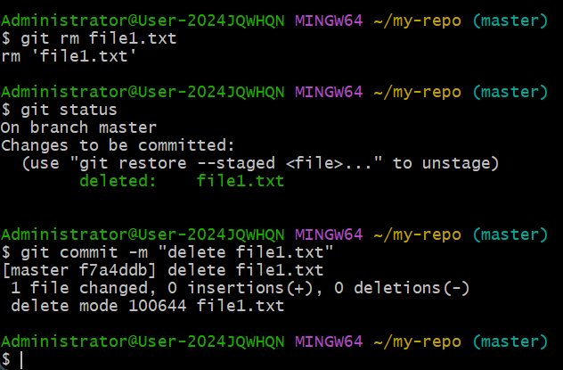

版本控制工具Git
本篇笔记摘自【GeekHour】一小时Git教程_哔哩哔哩
一、概述
1.Git是一个免费开源的分布式版本控制系统，使用仓库(一种数据库)记录文件变化
2.版本控制系统：跟踪文件变化，分为集中式和分布式两种
①集中式(如SVN)
- 文件保存在中央服务器上，修改时先下载最新版本再上传
- 优点：使用简单
- 缺点：中央服务器或网络故障时，客户无法工作
②分布式(如Git)
- 版本库在每个用户上，进行本地修改，分享式再同步仓库
- 优点：免费开源，速度快，功能强大，支持离线工作，分支管理强大
二、Git的安装与配置
1.网址：Git官网下载地址
2.安装后检查版本
git -v
- 回显
git version 2.45.2.windows.1
3.打开终端
在任意文件夹中右键鼠标，选择菜单栏中的Open Git Bash Here，即可打开Git的控制台，默认路径为当前文件夹。
4.使用Git
常见使用方法：
- 命令行：基本常用的方式，在终端中输入命令控制
- 图形化界面：即GUI
- IDE插件/拓展：常用
常用命令：

5.配置Git
| 操作 | 命令 | 备注 |
|---|---|---|
| 配置用户名 | git config --global user.name 用户名 |
用户名是多个单词时用引号括起来 |
| 配置邮箱 | git config --global user.email 邮箱 |
|
| 保存配置 | git config --global credential.helper store |
|
| 查看配置 | git config --global --list |
--local：本地配置，只对本地仓库有效--global：全局配置，对所有仓库有效（常用）--system：系统配置，对所有用户有效（少用）
三、新建版本库（仓库）
1.版本库
- 又叫仓库(Repository,Repo)，相当于一个由Git管理的文件目录，
- Git能跟踪和管理其中每个文件的修改和增删
2.创建仓库
方式一：本地创建(Git init)
创建
1 | |
检验仓库是否创建
1 | |
回显./ ../ .git/表示仓库已创建
方式二：从远程服务器克隆(Git clone)
- 使用**
git clone命令**从github或者gitee上克隆已经存在的仓库git clone 仓库地址
- 回显
Cloning into 'remote-repo'...
四、工作区域和文件状态
1.工作区域

- 工作区(working directory)、工作目录
- 如文件资源管理器中的文件夹
- 暂存区(staging area)、索引(index)
- 用于保存即将提交到仓库的修改内容
- 本地仓库(local repository)
- 用命令创建的仓库
- 包含了完整的项目历史和元数据
- 修改工作区文件–添加文件到暂存区–提交到本地仓库
- 整个过程中可以用git命令来查看、比较或者撤销修改
- 类似于工厂生产–货车转运–仓库储存的过程
2.文件状态
- 未跟踪(untracked):未被git管理的文件
- 未修改(unmodified):已被管理但未变化
- 已修改(modified):已经修改但未暂存
- 已暂存(staged):已修改且已暂存
五、添加和提交文件
1.添加文件

git status
- 回显：
- （未进行任何操作的空仓库）
- （添加文件后的仓库）
- 出现了未跟踪的文件file1.txt
- （未进行任何操作的空仓库）
3.git add命令：将文件添加到暂存区
- 目标文件从红色变成绿色，表明文件已处于已暂存状态
| 相关命令 | 作用描述 |
|---|---|
git rm --cached 已暂存文件 |
取消暂存指定的文件 |
git add 文件名 |
添加指定名称的文件 |
git add *.文件格式 |
添加文件夹中特定文件格式的所有文件 |
git add . |
添加文件夹中所有的文件 |
4.git commit命令：将暂存区的文件提交到仓库
- 使用
git commit -m "附加信息"的命令来将暂存区的文件提交到仓库
5.git log命令：查看提交记录
六、版本回退
1.git reset的三种形式
| 形式 | 回退版本 | 保留工作区 | 保留暂存区 | 场景or区别 |
|---|---|---|---|---|
git reset --soft |
〇 | 〇 | 〇 | 无需添加到暂存区 |
git reset --hard |
〇 | × | × | 放弃修改内容，谨慎使用！ |
git reset --mixed |
〇 | 〇 | × | 需要git add再提交 |
上述命令 + 历史版本ID：回退到指定版本上述命令 + head^：回退到上个版本- 如果不慎误操作，可以使用
git reflog查看以往版本的版本号，然后再git reset即可恢复
七、查看文件在不同区域、版本之间的差异
1.git diff命令：
- 比较文件在工作区与暂存区之间的差异
（输入;q退出vim编辑器） - 输出空行表示无差异
- 其他diff命令：(命令后加文件名可指定比较某文件的差异)
git diff HEAD：比较文件在工作区与版本库之间的差异git diff --cache：比较文件在暂存区与版本库之间的差异git diff 版本ID_1 版本ID_2：比较两个指定版本之间的差异git diff HEAD~n HEAD：比较之前第n个版本与当前版本的差异，n可省略git diff 分支名_1 分支名_2：比较两个指定分支之间的差异
八、删除文件
1.直接将文件移动到回收站，然后添加到暂存区并提交
2.git rm 命令：同时删除工作区和暂存区的文件

- 命令
git rm --cached 文件名可以只删除暂存区的文件，保留工作区的文件
九、gitignore文件
1.需要忽略的文件
- 系统或软件自动生成的文件
- 编译产生的中间文件和结果文件
- 运行时生成的日志文件、缓存文件和临时文件
- 涉及身份、密码、口令、秘钥等敏感信息文件
2.忽略某个或某类文件
- 例：有两个文件log1.log和log2.log，忽略log1.log
- 添加文件.gitignore
- 在文件.gitignore中写入“log1.log”
-
- 文件log1.log虽然存在于工作区中，但被忽视了，没有添加到暂存区，也就不会被提交到仓库
- 如果想忽略所有的.log文件，在文件.gitignore中写入*.log即可
- 注意：如果文件已被添加到版本库，那么忽视无效，需要先删除版本库中的文件
3.忽略文件夹
在文件.gitignore中写入文件夹名/即可
- 例：忽略文件夹temp：
- 忽略后要记得提交
4.匹配规则
- 对于.gitignore中的规则，从上往下进行忽略
- 空行或以#开头的行会被git忽略
- 一般用空行分隔，用#注释
- 使用标准的Blob模式匹配，例如：
-
- 匹配任意个字符
- ? 匹配单个字符
- [] 匹配列表中的单个字符
- \ [abc]表示a或者b或者c
- \ [0-9]表示任意一位数字
- \ [a-z]表示任意一位小写字母
-
- ** 表示任意匹配的中间目录
- ！ 表示取反，例如：
5.直接使用已有的.gitignore模版
[!info] 在github中获取.gitignore模版
https://github.com/github/gitignore
十、Github上的远程仓库
1.SSH配置
- SSH方式的优缺点：
- 规避在push本地代码时验证用户名和密码(HTTPS方式需要)
- 但是需要在github上添加SSH公钥配置
- 配置SSH公钥
- 执行命令
cd ~回到根目录 - 执行命令
cd .ssh进入.ssh目录- 若报错，需提前在用户文件夹下创建.ssh文件夹
- 执行命令
ssh-keygen -t rsa -b 4096指定生成密钥的协议和大小 - 输入秘钥文件名称，之前未配置过可以直接回车，默认生成id_rsa文件
- 如果已配置，创建新的文件名(如tset)
- 输入密码
- 查看本地目录，生成了test和test.pub两个文件
- 文件test是私钥文件，不能给任何人
- 文件test.pub是公钥文件，可以上传到github
- 复制test.pub的内容
- 在github中点击 头像 -> settings -> SSH and GPG keys -> New SSH key -> 输入标题 ->粘贴test.pub的内容 -> Add SSH key,成功在github上添加公钥
- 如果在创建SSH时指定了新的文件名，需要创建一个config文件并将下面五行内容添加到文件中，输入命令
tail -5 config，意思是访问github时指定使用SSH下的test密钥
- 如果在创建SSH时指定了新的文件名，需要创建一个config文件并将下面五行内容添加到文件中，输入命令
- 然后使用cd命令回到本地仓库，执行命令
git clone SSH地址，输入创建密钥时设置的密码 - 创建成功，可以使用
cd 远程仓库名称的命令进入远程仓库目录
- 执行命令
2.git push与git pull
git push:将本地仓库的内容推送到远程仓库- 推送前记得将文件提交到本地仓库
git pull:默认拉取远程仓库别名为origin的main分支，把远程仓库的指定分支拉取到本地git pull命令会进行合并操作，如果本地仓库的修改和远程仓库中的修改有冲突会导致合并失败
3.关联本地仓库与远程仓库
- 添加远程仓库
- 复制github空仓库下的该命令并粘贴到git中执行
- 其中origin是默认的仓库别名
- 若报错
error: remote origin already exists，需要执行git remote rm origin删除关联的远程仓库，再进行添加
- 查看当前仓库对应的远程仓库别名和地址
- 执行命令
git remote -v
- 执行命令
- 指定分支名称
- 若当前本地仓库分支是main,可跳过
- 关联本地仓库与远程仓库的main分支
- -u是upstream的缩写，表示关联
十一、Gitee与Gitlab
1.特点
- Gitee是国内平台，访问速度较高
- Gitlab支持私有化部署，安全性较高
2.Gitee
- 操作基本与github相同，但是创建仓库时需要先设为私有后再公开
3.Gitlab
- 略
十二、使用IDE拓展
- 在vs code的源代码管理器中，被修改并保存的文件会被记录到“更改”中，提供三个操作按钮和一个状态标识
- 前三个按钮分别表示打开文件、取消修改、添加暂存
- 最后的M表示已修改(Modified)
- 可以更方便地暂存、提交和推送
十三、分支(Branch)
1.简介＆应用场景
- 分支相当于代码库中的不同版本
- 各分支独立存在，有自己的提交记录
- 适合用于团队协作和开发管理，提高效率，规避冲突
- 多个开发人员在各自分支上工作，然后合并到一起
- 建立问题修复分支处理bug和缺陷，保证主线稳定可用
2.基本操作
git branch- 作用：查看当前仓库的所有分支
git checkout -b 分支名：新建一个分支并自动跳转到该分支git checkout 分支名：切换到已有的分支git merge 分支名：将要被合并的分支与当前分支合并(提前切换到主分支，命令中的分支名写要被合并的分支名称)git log --graph -- oneline --decorate --all:查看的分支图
- 分支合并后不会自动删除，需要手动通过命令删除分支
- 删除已合并的分支：
git branch -d 要删除的分支名 - 强制删除：
git branch -D 要删除的分支名
- 删除已合并的分支：
3.分支合并冲突
- 冲突的产生
- 两个分支的修改内容有重复，git无法确定覆盖哪一个修改
- 两个分支的修改内容有重复，git无法确定覆盖哪一个修改
- 解决办法
- 使用
git diff命令查看发生冲突的文件及内容 - 手动修改两个文件
- 使用
版本控制工具Git
http://blog.morely.top/2024/09/02/版本控制工具Git/